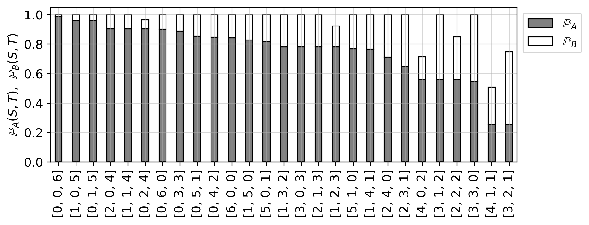

Strategie S gegen alle anderen Strategien
Strategie S gegen alle anderen Strategien¶
Das Programm erzeugt für eine vorgebebene Stategie \(S\) die Gewinnwahrscheinlichkeiten \(\mathbb{P}_A(S,T)\) und \(\mathbb{P}_B(S,T)\) gegen jede alternative Strategie \(T\). Die Abbildung zeigt die in absteigender Reihenfolge notierten Gewinnwahrscheinlichkeiten. Die Länge der weißen Kästchen entspricht der jeweiligen Wahrscheinlichkeit \(\mathbb{P}_B(S,T)\).
Mit dem Programm können z. B. die Gewinnwahrscheinlichkeiten beim Spiel Würfel trifft mit \(n=6\) Chips untersucht werden. Hier ist die Proportionalstrategie \(S=(3,2,1)\) optimal, obwohl die zugehörige Spieldauer beim Solitärspiel nur den zweitkleinsten Erwartungswert besitzt.
Eingabe (hier die Änderungen eintragen):
\(p=[1/2,1/3,1/6]\)
\(\text{strategy_S}=[4,2,0]\)
Die Anzahl an Fächern sowie die zugehörigen Wahrscheinlichkeiten können verändert werden. Übrigens: Bei 6 Feldern und 18 Chips - wie beim Spiel Differenz-trifft - sind es 33649 Strategien.
from itertools import combinations_with_replacement
import matplotlib.pyplot as plt
# Eingabe
p=[1/2,1/3,1/6]
strategy_S=[4,2,0]
# Funktion zur Berechnung der Wahrscheinlichkeiten
def P(V, W, p, player='A'):
state = (tuple(V), tuple(W), player)
if state in memo:
return memo[state]
if all(v == 0 for v in V) and any(w > 0 for w in W):
result = 1 if player == 'A' else 0 # A gewinnt
elif all(w == 0 for w in W) and any(v > 0 for v in V):
result = 1 if player == 'B' else 0 # B gewinnt
elif all(v == w for v, w in zip(V, W)):
result = 0 # Unentschieden
else:
total_prob = sum(p[j] for j in range(len(V)) if V[j] >= 1 or W[j] >= 1)
result = 0
for j in range(len(V)):
if V[j] >= 1 and W[j] >= 1:
V_new, W_new = list(V), list(W)
V_new[j] -= 1
W_new[j] -= 1
result += p[j] / total_prob * P(V_new, W_new, p, player)
elif W[j] >= 1 and V[j] == 0:
W_new = list(W)
W_new[j] -= 1
result += p[j] / total_prob * P(V, W_new, p, player)
elif V[j] >= 1 and W[j] == 0:
V_new = list(V)
V_new[j] -= 1
result += p[j] / total_prob * P(V_new, W, p, player)
memo[state] = result
return result
def calculate_probabilities(U, V, p):
P_A_win = P(U, V, p, 'A')
P_B_win = P(U, V, p, 'B')
P_draw = 1 - P_A_win - P_B_win
return P_A_win, P_B_win, P_draw
def generate_strategies(total_chips, num_fields):
for c in combinations_with_replacement(range(num_fields), total_chips):
strategy = [0] * num_fields
for i in c:
strategy[i] += 1
yield strategy
def fitness(strategy, strategy_S, p):
global memo
memo = {}
P_A, P_B, P_U = calculate_probabilities(strategy_S, strategy, p)
return P_A, P_B, P_U
def display_sorted_strategies():
total_chips = 6
num_fields = 3
# Generiere alle Strategien
strategies = list(generate_strategies(total_chips, num_fields))
# Berechne Gewinnwahrscheinlichkeiten
fitness_values = [(strategy, *fitness(strategy, strategy_S, p)) for strategy in strategies]
# Entferne die beste Strategie aus der Liste
fitness_values = [(strategy, P_A, P_B, P_U) for strategy, P_A, P_B, P_U in fitness_values if strategy != strategy_S]
fitness_values.sort(key=lambda x: x[1],reverse=True)
# Visualisierung vorbereiten
strategies_labels = [str(strategy) for strategy, _, _, _ in fitness_values]
win_prob_A = [win_prob_A for _, win_prob_A, _, _ in fitness_values]
win_prob_B = [win_prob_B for _, _, win_prob_B, _ in fitness_values]
plt.figure(figsize=(8, 3))
# Balken plotten
plt.bar(strategies_labels, win_prob_A, width=0.4, color='gray',
edgecolor='black', label='$\mathbb{P}_A$')
plt.bar(strategies_labels, win_prob_B, bottom=win_prob_A, width=0.4,
color='white', edgecolor='black', label='$\mathbb{P}_B$')
# Achsenbeschriftungen
plt.ylabel('$\mathbb{P}_A(S,T)$, $\mathbb{P}_B(S,T)$', fontsize=12)
plt.xticks(rotation=90, fontsize=12)
plt.yticks(fontsize=12)
# Layout-Anpassungen
plt.margins(x=0.01)
plt.subplots_adjust(left=0.05, right=0.95)
# Legende kompakt halten
plt.legend(loc='upper left', bbox_to_anchor=(1, 1), fontsize=12)
plt.tight_layout(pad=0.5)
plt.grid(alpha=0.5)
# Speichern mit angepassten Rändern
plt.savefig("strategie_plot.png", dpi=300, bbox_inches='tight') # Speichert das Bild
plt.close() # Schließt die Plot-Ausgabe, damit Jupyter Book nicht hängen bleibt
# Markdown-Code einfügen, um das Bild in die HTML-Seite zu laden
from IPython.display import display, Image
display(Image("strategie_plot.png"))
print(f"Vergleichsstrategie: S={strategy_S}")
display_sorted_strategies()
Vergleichsstrategie: S=[4, 2, 0]
